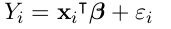
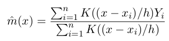
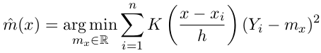
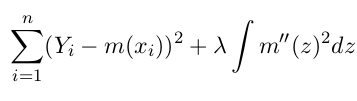
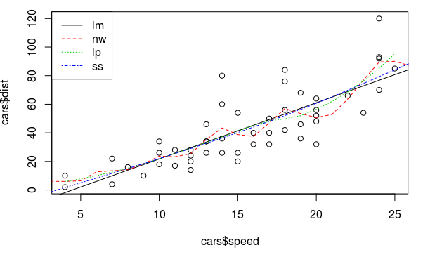
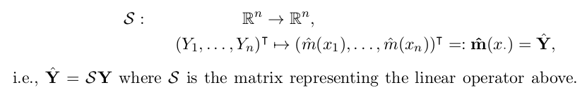
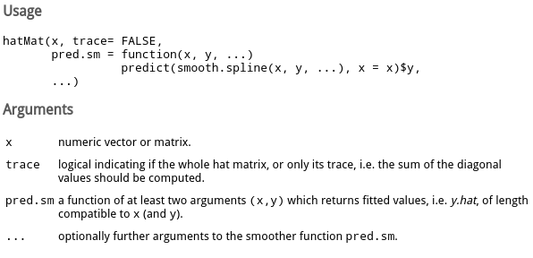
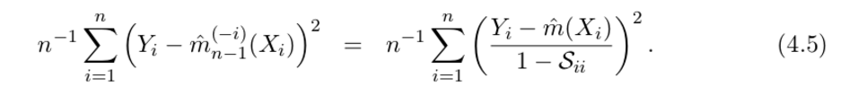
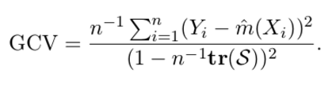

R里面的统计函数有很多, 这里只用线性模型lm以及(一维)非参估计最常用的三个smoother: Nadaraya-Watson kernel(NW, ksmooth), Local Polynomial(LP, loess), Smoothing Spline(SS, smooth.spline). 用这三个smoother作为例子, 介绍R里面统计回归的一些用法.
数据的形式是:

目标是估计函数m(). 例子使用R自带的cars数据集, 它包含两列: 汽车速度speed和刹车距离dist.
> data(cars) > summary(cars) speed dist Min. : 4.0 Min. : 2.00 1st Qu.:12.0 1st Qu.: 26.00 Median :15.0 Median : 36.00 Mean :15.4 Mean : 42.98 3rd Qu.:19.0 3rd Qu.: 56.00 Max. :25.0 Max. :120.00 > ?cars > plot(cars$speed, cars$dist)

Theory
首先简单介绍一下这4个smoother的原理:
linear model
认为m是线性形式(包含intercept):

Nadaraya-Watson kernel smoother
m_NW 在x处的取值为Yi的加权平均, 权重是按照kernel K()确定的.

另外m_NW(x)还可以看做是最小化加权的square-error:

Local Polynomial smoother
m_NW(x)最小化加权sq-err那个表达式里, 可以是用一个常数函数mx来估计在x处的取值, LP将它泛化为p-1阶多项式的形式, m在x附近是多项式形式. m(u)=poly(x-u), 这个多项式的系数为beta(x):
最后m_LP在x处的取值为:
Smoothing Spline
设定m的形式为knot在xi的spline, 加上penalize项:

另外SS可以看作是bandwidth随x变化的kernel smoother.
fit model
formula
lm和loess的文档里都提到参数为formula, 它大概是指示要fit的表达式形式. 这里面的加减号不是算数意义上的加减. 看例子:
dist ~ speed: 表示dist是speed的函数y ~ .: 表示y是所有其他变量的函数y ~ x1+x2: y 是x1和x2的函数y ~ x - 1: y是x的函数, 且没有intercept项
fit models
这几个函数的fit写法各不相同, 有的要提供formula, 有的要提供x和y值, 需要看文档:
fit.lm <- lm(dist~speed, data=cars) fit.nw <- ksmooth(cars$speed, cars$dist, kernel="normal") fit.lp <- loess(dist~speed, data=cars) fit.ss <- smooth.spline(cars$speed, cars$dist)
predict, fitted/residuals
predict的写法也是各不相同, 一般都是用predict函数, 然而这个函数在作用到不同smoother上面, 参数和返回值也都不一样......orz 关于xxsmoother的predict函数用法参考?predict.xx. 最奇葩的是NW, 它不能用predict函数, 而要fit的时候在skmooth函数里传入x.points参数...
看predict例子:
newspeed <- 1:26 pred.lm <- predict(fit.lm, newdata = data.frame(speed = newspeed), interval = "prediction")[,"fit"] pred.nw <- ksmooth(cars$speed, cars$dist, kernel="normal", bandwidth=2, x.points=newspeed)$y pred.lp <- predict(fit.lp, newdata=newspeed) pred.ss <- predict(fit.ss, x=newspeed)$y
另外, 如果想看smoother在design points(Xi)处的预测值, 可以用fitted函数(NW还是不能用), 例子:
fitted.lm <- fitted(fit.lm) fitted.nw <- ksmooth(cars$speed, cars$dist, kernel="normal", bandwidth=2, x.points=cars$speed)$y fitted.lp <- fitted(fit.lp) fitted.ss <- fitted(fit.ss)
要看每个点的residual ri=yi-yhat_i, 用residuals函数(NW不行):
resd.lm <- residuals(fit.lm) resd.nw <- ksmooth(cars$speed, cars$dist, kernel="normal", bandwidth=2, x.points=cars$dist)$y - cars$dist resd.lp <- residuals(fit.lp) resd.ss <- residuals(fit.ss)
可以画出这几个方法的fit:
abline(fit.lm, lty=1, col=1) # linear model is just a straigh line
lines(newspeed, pred.nw, lty=2, col=2)
lines(newspeed, pred.lp, lty=3, col=3)
lines(newspeed, pred.ss, lty=4, col=4)
legend("topleft", c("lm", "nw", "lp", "ss"), lty=1:4, col=1:4)

bandwidth&df: Hat Matrix
三个非参估计的smoother都有"带宽"(bandwidth)或者"自由度"(df)的概念, 带宽即NW或LP表达式里的h.
自由度df是带宽的函数, smoother的df可以用它的hat matrix S计算出来.
一个smoother的hat matrix S, 是把训练值Y映射到估计值Yhat的矩阵:

而df则是S的迹: df = tr(S). df的
根据script(P28), S的第j列可以用这个smoother fit一个unit vector来得到:

所以计算S可以用下面的代码:
n <- nrow(cars) Snw <- Slp <- Sss <- matrix(0, nrow=n, ncol=n) In <- diag(n) # identity matrix for(j in 1:n){ y <- In[,j] # unit vector ej Snw[,j] <- ksmooth(cars$speed,y,kernel="normal", bandwidth = 2, x.points=x)$y Slp[,j] <- fitted(loess(y~cars$speed)) Sss[,j] <- fitted(smooth.spline(cars$speed, y)) } df.nw <- sum(diag(Snw)) df.lp <- sum(diag(Slp)) df.ss <- sum(diag(Sss))
发现三个非参smoother的自由度不同, 所以上面画图的比较并没有意义, 为了让三者的自由度相同, 可以设定ksmooth/loess/smooth.spline的参数.
控制带宽, Lp的参数为span, SS的参数为spar; 而指定想要的自由度则分别是enp.target和df.
cat("let all 3 np smoother use the same df=", df.nw) Slp <- Sss <- matrix(0, nrow=n, ncol=n) In <- diag(n) # identity matrix for(j in 1:n){ y <- In[,j] Slp[,j] <- fitted(loess(y~cars$speed, enp.target=df.nw)) Sss[,j] <- fitted(smooth.spline(cars$speed, y, df=df.nw)) } sum(diag(Slp)) sum(diag(Sss))
发现SS的df参数使用以后控制的非常接近NW的df了, 不过lp的df还是不够接近, 用span来控制应该更准确一些, 为了找到合适的span, 用以下代码来寻找使得df=df.nw的span取值:
dflp <- function(span, val){ for(j in 1:n) Slp[,j] <- loess(In[,j] ~ cars$speed, span = span)$fitted return(sum(diag(Slp)) - val) } chosen_span <- uniroot(dflp, c(0.2, 0.5), val = df.nw)$root
如果不用这个循环计算的话, 可以用sfsmisc包里的hatMat函数:

参数trace取TRUE的话, 直接返回hat matrix的迹, 否则返回整个hat matrix.
需要把要计算的smoother包装成一个pred.sm函数传入, 这个函数接受x和y, 返回fitted数值. 例子:
hatMat(cars$speed, T, pred.sm = function(x,y) ksmooth(x, y, kernel="normal", bandwidth=2, x.points=x)$y ) hatMat(cars$speed, T, pred.sm = function(x,y) fitted(loess(y~x, span=chosen_span)) ) hatMat(cars$speed, T, pred.sm = function(x,y) fitted(smooth.spline(x, y, df=df.nw)) )
CV and Hat Matrix
为了预测smoother的performance, 用loo CV来估计MSE(mean sq err)的值.
loo CV可以用下面这个通用函数得到(注意看对于参数的要求):
##' Calculates the LOO CV score for given data and regression prediction function ##' ##' @param reg.data: regression data; data.frame with columns 'x', 'y' ##' @param reg.fcn: regr.prediction function; arguments: ##' reg.x: regression x-values ##' reg.y: regression y-values ##' x: x-value(s) of evaluation point(s) ##' value: prediction at point(s) x ##' @return LOOCV score loocv <- function(reg.data, reg.fcn){ ## Help function to calculate leave-one-out regression values loo.reg.value <- function(i, reg.data, reg.fcn) return(reg.fcn(reg.data$x[-i], reg.data$y[-i], reg.data$x[i])) ## Calculate LOO regression values using the help function above n <- nrow(reg.data) loo.values <- sapply(1:n, loo.reg.value, reg.data, reg.fcn) ## Calculate and return MSE return( mean( (loo.values-reg.data$y)^2) ) }
比如, 为了计算NW的CV数值, 需要这样:
regfcn.nw <- function(regx, regy, x) ksmooth(regx, regy, kernel="normal", bandwidth=2, x.points=x)$y loocv(data.frame(x=cars$speed, y=cars$dist), regfcn.nw)
不过, 如果得到了hat Matrix S, 根据公式4.5, loo CV可以这样一次计算出来:

试一下:
# compute CV using shortcut euqation yhat.nw <- Snw %*% cars$y # or use regfcn.nw(cars$speed, cars$dist, cars$speed) mean( ( (cars$y-yhat.nw)/ (1-diag(Snw)) )^2 )
得到的结果和之前用loocv一样, 都是253.9128 !~
或者只用df, 计算generalized CV, 公式为:

#compute GCV mean( (cars$dist-yhat.nw)^2 ) / ( 1 - df.nw/n )^2
得到gcv=269.3911, 和looCV也比较接近.

Comments !